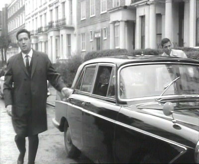
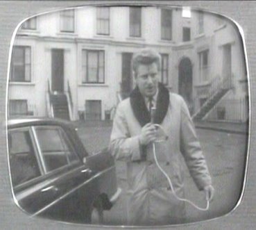
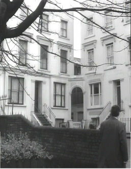
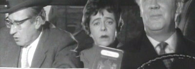
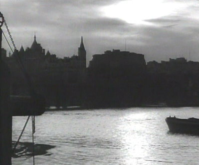
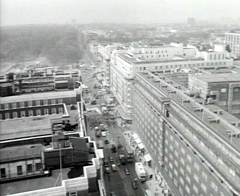
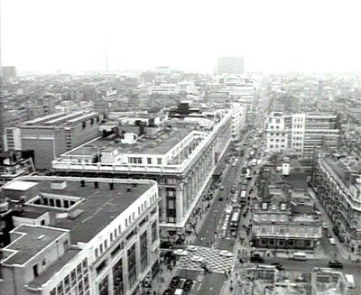

|
|
HELP FIND THE FOLLOWING LOCATIONS
PAGE 27
GIDEON’S WAY: How to
Retire Without Really Working (George Pollock: November/December 1964)
Harcourt
Street, W1- Robert Gresham (Eric Barker)
is loitering with intent in a London street early one morning.


Princess Mews, NW3– After the smash and grab Robert Gresham gets into a waiting Rolls Royce driven by his wife. The car narrowly misses a barrow Boy (Brian Weske).


Unknown 1– The Rolls Royce travels through another mews.


 Probably near the other Belsize locations.
Probably near the other Belsize locations.

St. Pancras Way, NW1– Margaret suggests that Robert get changed in the back of the car.

Unknown 3– The Rolls continues down a residential street.

Unknown 4– Driving away from the crime scene the Greshams run into a police diversion. The police have cordoned off a street where an armed robber, ShortyFlemming is hold up. Gideon (John Gregson) and Keen (Alexander Davion) arrive on the scene to take charge of the situation. Gideon recognises Robert Gresham and comments to Keen about the Rolls. Gideon’s intervention is cover in that night’s television news.


 
(Identified by Tamara Cartwright-Loebl, May 2007)


Belsize Lane/Belsize Place Hampstead – Robert Gresham (Eric Barker) goes to see Mr. Hunter in his antique
shop to fence his booty.
(Identified by Remy, January 16th 2009)

 This is in Hampstead (there is a ‘HAM”
phone number over the door).
This is in Hampstead (there is a ‘HAM”
phone number over the door).
Uxbridge, Vine Street Station (demolished and now under
Hillingdon Road– Margaret Gresham (Joyce Grant)
hides any incriminating evidence and a proportion of their loot at a disused
railway station. Later Robert Gresham (Eric Barker) joins his wife to collect
their belongings.
(Identified by Alan Field, June 2007)

 seeSubterranean
Britain
for photograph
seeSubterranean
Britain
for photograph


N5- Robert Gresham (Eric Barker) goes to stake out the offices of Mitchell Plastics Ltd. for a robbery. The policeman tailing him thinks he’s there for a legitimate job.
Baker Street, W1– After being
interviewed by Gideon the Greshams return home in a taxi and discuss their
future.
(Identified by Alan Field, December 2007)


 This whole sequence
is travelling west along Piccadilly - the building to the right is the north
then west side of the Ritz
This whole sequence
is travelling west along Piccadilly - the building to the right is the north
then west side of the Ritz
Unknown 9 – Mr. Pater drives the Greshams to the docks and gives them their passports.

 Could be warehouses by the docks or by
King’s Cross.
Could be warehouses by the docks or by
King’s Cross.
Unknown 10– The Greshams find their way to meet their contact in Docklands.

Unknown 11– Later that night the Greshams arrive at the docks and realize that they have been duped.


GIDEON’S WAY: The Millionaire’s Daughter (Cyril Frankel: April 1965)
Park
Street, W1 –
The Rochester Hotel where Elliot Henderson and his family are staying. Alan
Blake and Nina Henderson admire the view (over Oxford Street). Later Alan (Don Borisenko) drops Erica Townsend (Georgina Ward),
disguised as Nina back at the hotel and makes sure the porter remembers them.
 
Kenway Road, SW5- Alan (Don Borisenko) suggests that Nina Henderson (Lans Traverse) and he visit Chelsea to see
what new art is on offer. They find themselves in the ‘Good Art Shop’ in Benson
Street. Alan leaves the shop with the Erica Townsend (Georgina Ward), disguised
as Nina. Nearby a shoe shop is robbed and Mr. Williams (Harold Goodwin), the
owner, finds a police Constable on the street to report the crime. A reporter,
Gerry Adams (Brian Weske) is interviewing Mr Williams when Gideon
(John Gregson) and Keen (Alexander Davion) turn up to search The Good Art Shop.
(Identified by Alan Field, December 2007)


Culvert Place, SW11- Gideon suspects that the girl is being help in a room in London, near trains. This turns out to be workshop in the railway arches at Battersea. They take fake Erica Townsend (Georgina Ward) there and Gideon (John Gregson) and Keen (Alexander Davion) attempt to rescue the girl with her help.


photo: Stephen Carter

photo: Stephen Carter
Think you know a spot? Need a bigger image? Email me.
< Previous | Index | Avengerland | Next >
Copyright © 2003 Anthony R. McKay